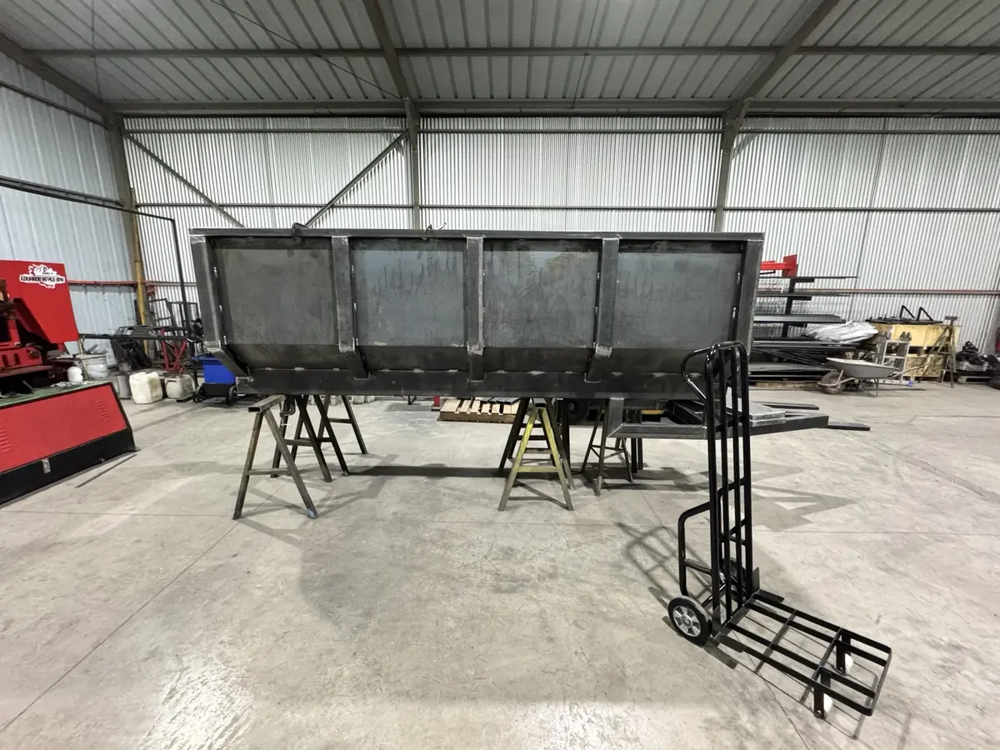
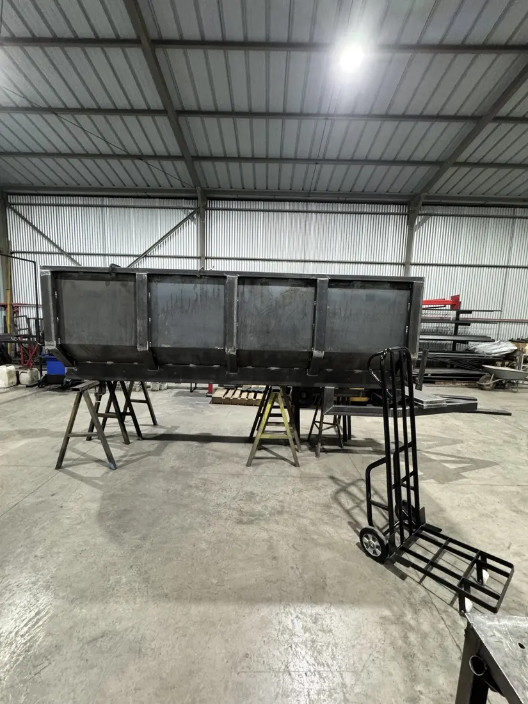
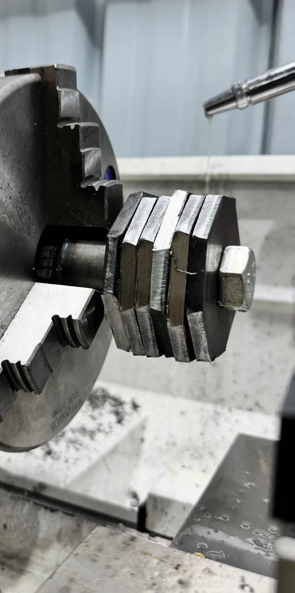

Trabajo real · Fabricación metalmecánica integral
Fabricación de tolva metálica para tractor
Fabricación integral de una tolva o carro metálico de arrastre para tractor. El trabajo combina corte plasma CNC de planchas, preparación de perfiles, mecanizado de componentes en torno, armado estructural y soldadura.





Caso documentado
Necesidad, equipos y resultado
- Necesidad
- Fabricar una solución de arrastre adaptada a un tractor.
- Equipos
- Plasma CNC, torno, soldadura y control geométrico.
- Resultado
- Tolva estructural a medida, preparada para montaje y operación.
Proceso ejecutado
- Levantamiento de dimensiones y definición de la estructura de carga
- Corte plasma CNC de planchas, refuerzos y componentes
- Corte y preparación de perfiles para bastidor, costados y lanza
- Mecanizado en torno de pasadores, ejes y uniones requeridas
- Armado, soldadura y control geométrico del conjunto
- Terminación y preparación para montaje del sistema de rodado y conexión